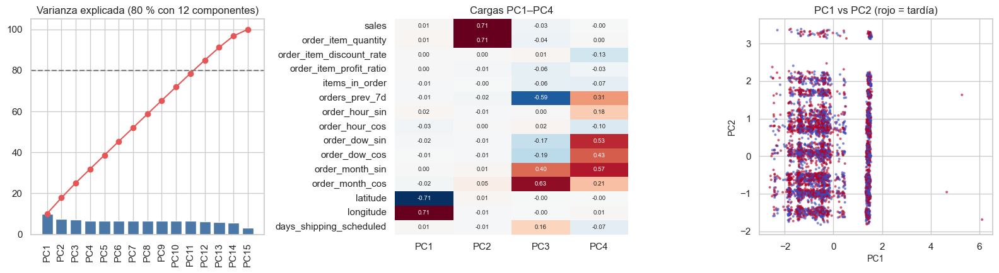
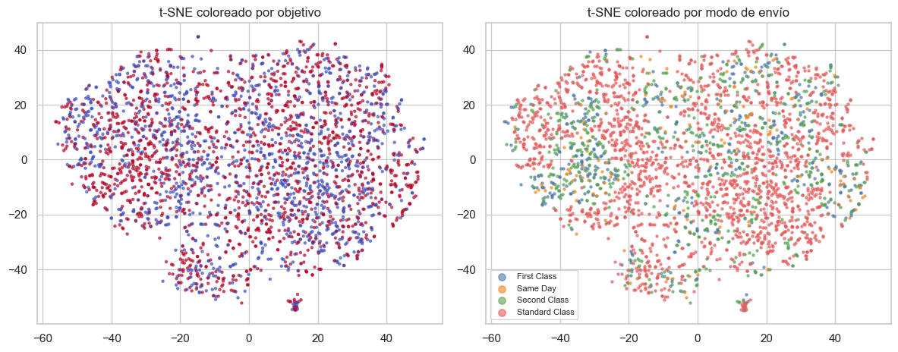
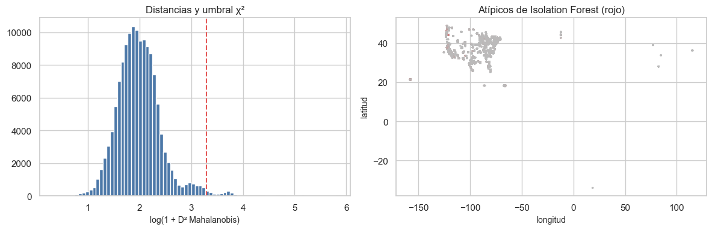
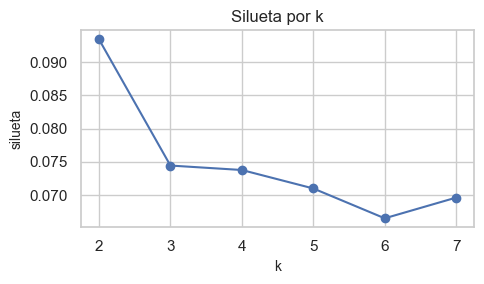

6. Análisis multivariado (2.4)#
Reducción de dimensionalidad exploratoria (PCA y t-SNE solo como herramienta visual), atípicos multivariados (distancia de Mahalanobis robusta e Isolation Forest) y estructura de grupos (k-means). Se usan las numéricas no redundantes identificadas en el capítulo 5, estandarizadas con estadísticos del entrenamiento. Solo entrenamiento.
from pathlib import Path
import re, sys, warnings
import numpy as np
import pandas as pd
import matplotlib.pyplot as plt
import seaborn as sns
from IPython.display import Markdown, display
project_root = Path.cwd().resolve()
while not (project_root / "_config.yml").exists():
if project_root.parent == project_root:
raise FileNotFoundError("No se encontró _config.yml. Ejecuta el notebook dentro de la carpeta del libro.")
project_root = project_root.parent
if str(project_root) not in sys.path:
sys.path.insert(0, str(project_root))
for _folder in ("tables", "figures"): # se crean si no existen
(project_root / _folder).mkdir(exist_ok=True)
from src.project_utils import *
configure_plots()
pd.set_option("display.max_columns", 80)
pd.set_option("display.width", 170)
pd.set_option("display.max_colwidth", 70)
TABLES = project_root / "tables"
def md_out(text):
display(Markdown(text))
from scipy import stats
from sklearn.preprocessing import StandardScaler
from sklearn.decomposition import PCA
from sklearn.covariance import MinCovDet
from sklearn.ensemble import IsolationForest
from sklearn.cluster import KMeans
from sklearn.metrics import silhouette_score
from sklearn.manifold import TSNE
train = load_train()
y = train[TARGET]
NUM_M = ["sales", "order_item_quantity", "order_item_discount_rate", "order_item_profit_ratio", "items_in_order",
"orders_prev_7d", "order_hour_sin", "order_hour_cos", "order_dow_sin", "order_dow_cos",
"order_month_sin", "order_month_cos", LAT, LON, "days_shipping_scheduled"]
Z = StandardScaler().fit_transform(train[NUM_M])
rng = np.random.default_rng(RANDOM_STATE)
PCA: varianza explicada y estructura#
pca = PCA(random_state=RANDOM_STATE).fit(Z)
var = pd.DataFrame({"componente": [f"PC{i + 1}" for i in range(len(NUM_M))], "varianza_%": 100 * pca.explained_variance_ratio_})
var["acumulada_%"] = var["varianza_%"].cumsum()
var.to_csv(TABLES / "pca_varianza.csv", index=False)
k80 = int((var["acumulada_%"] < 80).sum() + 1)
cargas = pd.DataFrame(pca.components_[:4].T, index=NUM_M, columns=["PC1", "PC2", "PC3", "PC4"])
cargas.to_csv(TABLES / "pca_cargas.csv")
idx = rng.choice(len(train), 6000, replace=False)
P = pca.transform(Z[idx])[:, :2]
fig, axes = plt.subplots(1, 3, figsize=(16, 4.5))
axes[0].bar(var["componente"], var["varianza_%"], color="#4c78a8"); axes[0].plot(var["componente"], var["acumulada_%"], "o-", color="#e45756")
axes[0].axhline(80, ls="--", color="gray"); axes[0].set_title(f"Varianza explicada (80 % con {k80} componentes)"); axes[0].tick_params(axis="x", rotation=90)
sns.heatmap(cargas, cmap="RdBu_r", center=0, annot=True, fmt=".2f", ax=axes[1], cbar=False, annot_kws={"size": 7}); axes[1].set_title("Cargas PC1–PC4")
sc = axes[2].scatter(P[:, 0], P[:, 1], c=y.iloc[idx], cmap="coolwarm", s=4, alpha=0.5)
axes[2].set_xlabel("PC1"); axes[2].set_ylabel("PC2"); axes[2].set_title("PC1 vs PC2 (rojo = tardía)")
plt.tight_layout(); save_figure(fig, "06_pca.png"); plt.show()
display(var.round(2).head(8))

| componente | varianza_% | acumulada_% | |
|---|---|---|---|
| 0 | PC1 | 10.15 | 10.15 |
| 1 | PC2 | 7.72 | 17.86 |
| 2 | PC3 | 7.27 | 25.13 |
| 3 | PC4 | 6.79 | 31.91 |
| 4 | PC5 | 6.75 | 38.67 |
| 5 | PC6 | 6.71 | 45.37 |
| 6 | PC7 | 6.68 | 52.06 |
| 7 | PC8 | 6.68 | 58.73 |
Interpretación. La varianza está repartida: se necesitan muchas componentes para llegar al 80 %, porque las variables son casi independientes (cap. 5). PC1 es el eje «monto del pedido» (ventas y cantidad), PC2 el eje geográfico (latitud/longitud). Ninguna componente separa entregas tardías de no tardías: los puntos rojos y azules se superponen. La dimensionalidad efectiva es alta y la señal está en una variable (el modo de envío), no en una combinación de muchas.
idx_t = rng.choice(len(train), 3000, replace=False)
emb = TSNE(n_components=2, perplexity=40, random_state=RANDOM_STATE, init="pca").fit_transform(Z[idx_t])
fig, axes = plt.subplots(1, 2, figsize=(12, 4.8))
axes[0].scatter(emb[:, 0], emb[:, 1], c=y.iloc[idx_t], cmap="coolwarm", s=5, alpha=0.6); axes[0].set_title("t-SNE coloreado por objetivo")
modo = train["shipping_mode"].iloc[idx_t]
for m, c in zip(sorted(modo.unique()), ["#4c78a8", "#f58518", "#54a24b", "#e45756"]):
mask = (modo == m).to_numpy()
axes[1].scatter(emb[mask, 0], emb[mask, 1], s=5, alpha=0.6, color=c, label=m)
axes[1].legend(markerscale=3, fontsize=8); axes[1].set_title("t-SNE coloreado por modo de envío")
plt.tight_layout(); save_figure(fig, "06_tsne.png"); plt.show()
c:\Users\juand\miniconda3\envs\ml_venv\lib\site-packages\joblib\externals\loky\backend\context.py:136: UserWarning: Could not find the number of physical cores for the following reason:
[WinError 2] El sistema no puede encontrar el archivo especificado
Returning the number of logical cores instead. You can silence this warning by setting LOKY_MAX_CPU_COUNT to the number of cores you want to use.
warnings.warn(
File "c:\Users\juand\miniconda3\envs\ml_venv\lib\site-packages\joblib\externals\loky\backend\context.py", line 257, in _count_physical_cores
cpu_info = subprocess.run(
File "c:\Users\juand\miniconda3\envs\ml_venv\lib\subprocess.py", line 505, in run
with Popen(*popenargs, **kwargs) as process:
File "c:\Users\juand\miniconda3\envs\ml_venv\lib\subprocess.py", line 951, in __init__
self._execute_child(args, executable, preexec_fn, close_fds,
File "c:\Users\juand\miniconda3\envs\ml_venv\lib\subprocess.py", line 1436, in _execute_child
hp, ht, pid, tid = _winapi.CreateProcess(executable, args,

Interpretación (solo visual, no inferencial). t-SNE forma grupos definidos sobre todo por el modo de envío (días programados) y por la ubicación; dentro de cada grupo los colores del objetivo vuelven a mezclarse. Confirma que la estructura multivariada no contiene una separación oculta de las clases.
Atípicos multivariados: Mahalanobis robusta e Isolation Forest#
cont = ["sales", "order_item_quantity", "order_item_discount_rate", "order_item_profit_ratio", "items_in_order", "orders_prev_7d", LAT, LON]
Zc = StandardScaler().fit_transform(train[cont])
idx_m = rng.choice(len(train), 20000, replace=False)
mcd = MinCovDet(random_state=RANDOM_STATE).fit(Zc[idx_m])
umbral = stats.chi2.ppf(0.999, df=len(cont))
pct_robusta = float((mcd.mahalanobis(Zc) > umbral).mean())
# La versión robusta (MCD) marca demasiadas filas porque los datos son multimodales (Puerto Rico vs. continente)
# y discretos: el «núcleo» que elige MCD es un solo modo. Se usa la covarianza clásica para la decisión.
inv = np.linalg.pinv(np.cov(Zc, rowvar=False))
d2 = np.einsum("ij,jk,ik->i", Zc, inv, Zc)
out_mah = d2 > umbral
md_out(f"Mahalanobis **robusta (MCD)** marcaría {es(pct_robusta, 1, pct=True)} de las filas como atípicas: con datos multimodales el "
"núcleo de MCD es uno solo de los modos (Puerto Rico o el continente) y todo lo demás parece atípico. Se usa la distancia **clásica**.")
# Para ahorrar memoria, el bosque se ajusta con una muestra de 20.000 filas (cada árbol usa 256 de todos modos)
# y se aplica a todas las filas por bloques.
import gc
gc.collect()
iso = IsolationForest(n_estimators=100, max_samples=256, contamination=0.01, random_state=RANDOM_STATE).fit(Zc[idx_m])
umbral_iso = np.quantile(np.concatenate([iso.score_samples(Zc[i:i + 20000]) for i in range(0, len(Zc), 20000)]), 0.01)
out_iso = np.concatenate([iso.score_samples(Zc[i:i + 20000]) for i in range(0, len(Zc), 20000)]) <= umbral_iso
perfil = pd.DataFrame({
"grupo": ["Mahalanobis clásica > χ²(0,999)", "Isolation Forest", "ambos", "resto"],
"líneas": [out_mah.sum(), out_iso.sum(), (out_mah & out_iso).sum(), (~out_mah & ~out_iso).sum()],
"tardía_%": [100 * y[out_mah].mean(), 100 * y[out_iso].mean(), 100 * y[out_mah & out_iso].mean(), 100 * y[~out_mah & ~out_iso].mean()],
})
perfil["líneas_%"] = 100 * perfil["líneas"] / len(train)
perfil.to_csv(TABLES / "atipicos_multivariados.csv", index=False)
display(perfil.round(2))
comp = pd.concat([train.loc[out_iso, cont].median().rename("mediana atípicos IF"), train.loc[~out_iso, cont].median().rename("mediana resto")], axis=1)
display(comp.round(3))
fig, axes = plt.subplots(1, 2, figsize=(12, 4))
axes[0].hist(np.log1p(d2), bins=80, color="#4c78a8"); axes[0].axvline(np.log1p(umbral), color="#e45756", ls="--")
axes[0].set_xlabel("log(1 + D² Mahalanobis)"); axes[0].set_title("Distancias y umbral χ²")
axes[1].scatter(train[LON], train[LAT], s=2, c=np.where(out_iso, "#e45756", "#bbbbbb"), alpha=0.5)
axes[1].set_xlabel("longitud"); axes[1].set_ylabel("latitud"); axes[1].set_title("Atípicos de Isolation Forest (rojo)")
plt.tight_layout(); save_figure(fig, "06_atipicos.png"); plt.show()
Mahalanobis robusta (MCD) marcaría 39,2 % de las filas como atípicas: con datos multimodales el núcleo de MCD es uno solo de los modos (Puerto Rico o el continente) y todo lo demás parece atípico. Se usa la distancia clásica.
| grupo | líneas | tardía_% | líneas_% | |
|---|---|---|---|---|
| 0 | Mahalanobis clásica > χ²(0,999) | 2432 | 54.36 | 1.70 |
| 1 | Isolation Forest | 1431 | 53.32 | 1.00 |
| 2 | ambos | 846 | 53.55 | 0.59 |
| 3 | resto | 140058 | 54.92 | 97.89 |
| mediana atípicos IF | mediana resto | |
|---|---|---|
| sales | 250.000 | 179.970 |
| order_item_quantity | 4.000 | 1.000 |
| order_item_discount_rate | 0.130 | 0.090 |
| order_item_profit_ratio | -1.550 | 0.270 |
| items_in_order | 3.000 | 4.000 |
| orders_prev_7d | 398.000 | 399.000 |
| latitude | 33.833 | 33.139 |
| longitude | -98.191 | -76.761 |

Interpretación. Isolation Forest (ajustado con una muestra de 20.000 líneas y aplicado a todas) marca el 1 % más aislado. Los atípicos multivariados son combinaciones poco frecuentes (ventas con pérdida grande, ubicaciones fuera del territorio continental y de Puerto Rico, primera semana sin historia de carga). Su tasa de entregas tardías es similar a la del resto, de modo que no son una subpoblación con otro comportamiento del objetivo. Decisión: se conservan; no se eliminan filas por ser atípicas (serían pedidos reales en producción). La regresión logística es sensible a valores extremos en las numéricas, lo que se mitiga con la transformación log y el escalado (cap. 10).
Estructura de grupos (k-means exploratorio)#
idx_k = rng.choice(len(train), 15000, replace=False)
sil = {}
for k in range(2, 8):
km = KMeans(n_clusters=k, n_init=5, random_state=RANDOM_STATE).fit(Z[idx_k])
sil[k] = silhouette_score(Z[idx_k], km.labels_, sample_size=5000, random_state=RANDOM_STATE)
k_best = max(sil, key=sil.get)
km = KMeans(n_clusters=k_best, n_init=10, random_state=RANDOM_STATE).fit(Z)
cl = pd.Series(km.labels_, name="cluster")
perfil_cl = train.assign(cluster=cl).groupby("cluster").agg(
líneas=(TARGET, "size"), tardía_pct=(TARGET, lambda s: 100 * s.mean()),
dias_prog=("days_shipping_scheduled", "mean"), ventas=("sales", "median"), lat=(LAT, "median"), lon=(LON, "median"))
perfil_cl.to_csv(TABLES / "clusters_perfil.csv")
fig, ax = plt.subplots(figsize=(5, 3))
ax.plot(list(sil), list(sil.values()), "o-"); ax.set_xlabel("k"); ax.set_ylabel("silueta"); ax.set_title("Silueta por k")
plt.tight_layout(); save_figure(fig, "06_silueta.png"); plt.show()
md_out(f"Mejor k por silueta: **{k_best}** (silueta = {es(sil[k_best], 3)}). Perfil de los grupos:")
display(perfil_cl.round(2))

Mejor k por silueta: 2 (silueta = 0,093). Perfil de los grupos:
| líneas | tardía_pct | dias_prog | ventas | lat | lon | |
|---|---|---|---|---|---|---|
| cluster | ||||||
| 0 | 85854 | 54.88 | 2.93 | 179.97 | 37.67 | -92.22 |
| 1 | 57221 | 54.94 | 2.94 | 179.97 | 18.25 | -66.37 |
Interpretación. La silueta es baja (< 0,25): no hay grupos naturales bien separados; k-means corta el espacio por ubicación y por días programados. Con k = 2 separa Puerto Rico del continente, y ambos grupos tienen la misma tasa de entregas tardías.
Conclusión del multivariado. (i) La dimensionalidad efectiva es alta y las numéricas son casi independientes entre sí una vez eliminadas las redundancias; (ii) no hay subpoblaciones que requieran modelos separados; (iii) la señal del objetivo está en el modo de envío y es débil en todo lo demás. Un modelo lineal con el modo de envío y controles es una línea base adecuada.